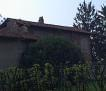
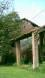

|
Dall'archivio
storico
fotografico della
Associazione
Culturale Zivido




|
Disabitato da decenni ed in stato di progressivo degrado, il Castelletto
di Carpianello si trova nel bel mezzo della frazione circondato
da un ampio spazio verde incolto dove forse un tempo sorgevano altre
costruzioni di servizio.
Provenendo da San Giuliano o da Mediglia e superato
lo stretto gomito di strada, alla cui sinistra rimane ancora l'antico
mulino, maestoso nella sua semplice e razionale costruzione il Castelletto
ci appare improvviso fra gli arbusti e gli alberi adagiato sul verde
intenso del prato.
Malinconico nel suo isolamento ed abbandono voluto
dagli uomini, ci testimonia la vita di tempi lontani, di buon gusto
nel costruire senza fronzoli dove per� le ampie finestre sforzesche
danno un tocco di insolita eleganza.
Auguriamoci che nello spirito crescente di attenzione
verso il patrimonio storico culturale sangiulianese, del quale l'Associazione
Culturale Zivido � propulsore, il Castelletto di Carpianello possa
trovare degna e pronta collocazione.
|
|


{kind=link}
{kind=link}
{kind=link}
{kind=link}
{kind=link}